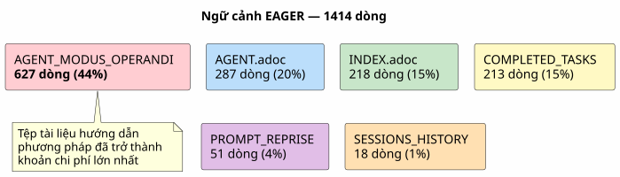
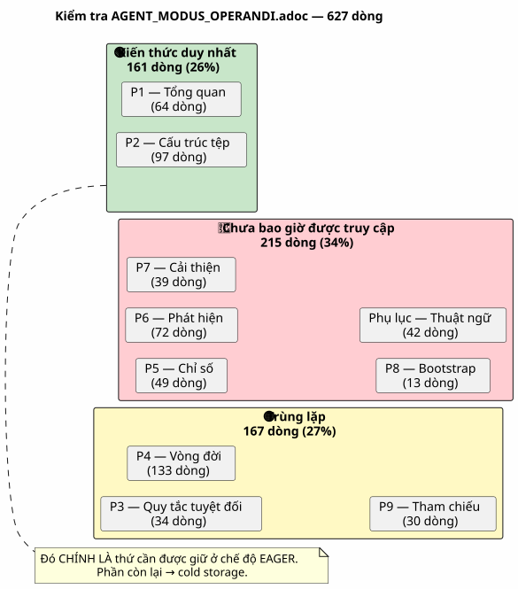
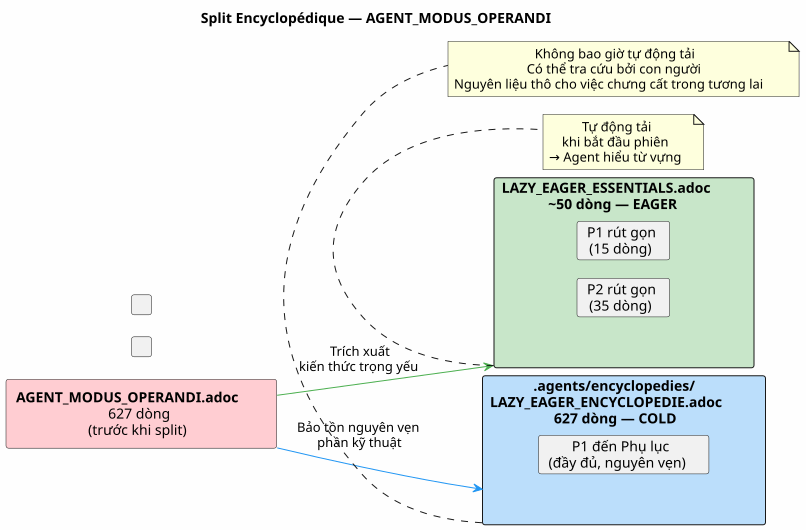
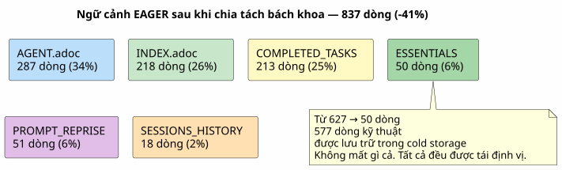
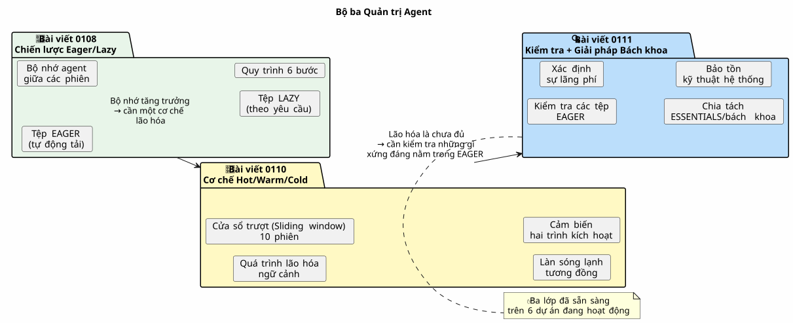
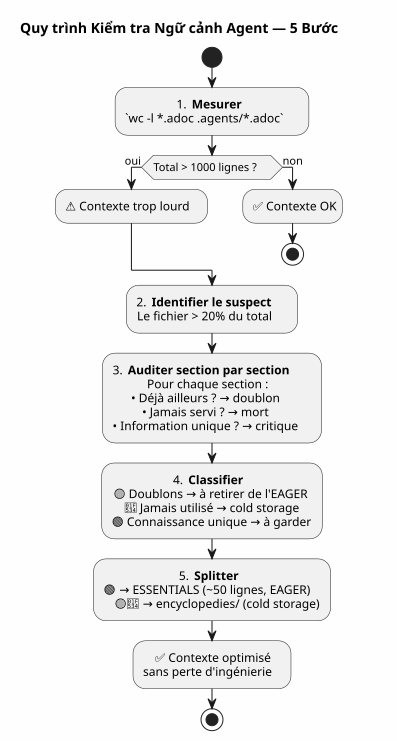
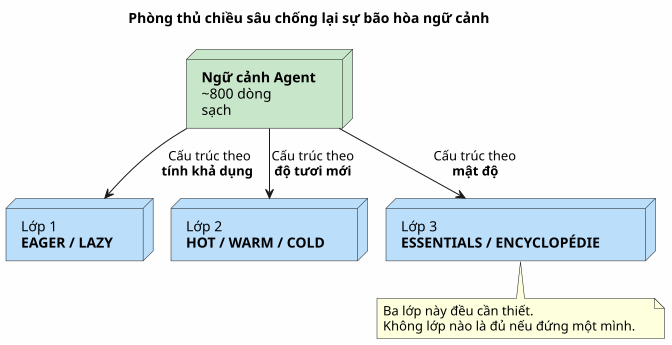

Kiểm tra Bối cảnh Agent: Khi Chính Hệ thống Quản trị của Bạn Trở thành Vấn đề — và Cách Khắc phục mà Không Làm Mất bất cứ điều gì
Đăng ngày 27 April 2026
- Cảnh: phiên 051, có gì đó không ổn
- Kiểm toán: phân tích chi tiết
627dòng - Nỗi sợ đánh mất kỹ thuật
- Giải pháp: split bách khoa toàn thư
- Nội dung của tệp ESSENTIALS
- Kết quả: -50% ngữ cảnh EAGER
- Tại sao thư mục lại tên là `encyclopedies/
- Tiếp nối logic của chuỗi
- Điều tôi sẽ làm khác đi
- Hướng dẫn kiểm tra ngữ cảnh của chính bạn
- Một quản trị sống động
- Liên kết
Bạn đã dành nhiều tuần để xây dựng một hệ thống quản trị agent hoàn hảo. Eager/Lazy, quy trình kết thúc phiên, backup xoay vòng. Hệ thống vận hành trơn tru. Rồi một ngày, agent trở nên chậm chạp. Các câu trả lời bị loãng. Bạn đo lường: 1414 dòng được tải tự động. Và điều tồi tệ nhất là thủ phạm không phải là mã nguồn, cũng không phải backlog hay kho lưu trữ phiên. Thủ phạm chính là tệp tài liệu ghi chép phương pháp của bạn.
- mục lục
-
[]
Cảnh: phiên 051, có gì đó không ổn
30 tháng 4 năm 2026, 16h00. Tôi đang trong một phiên làm việc trên`magic-stick`, dự án build ISO Linux live của tôi. Agent Opencode đã tự động tải các tệp Eager của tôi lên như thường lệ —AGENT.adoc, PROMPT_REPRISE.adoc, .agents/INDEX.adoc. Mọi thứ đều bình thường.
Có điều là các câu trả lời trở nên hời hợt. Tác nhân mất thêm hai giây để suy luận. Nó quên một chi tiết mà nó đã thấy ngay trước mắt từ ba tin nhắn trước đó. Đây không phải là một cú sập, không phải là một lỗi — mà là một sự xuống cấp chậm chạp, cái kiểu mà người ta không nhận ra ngay lập tức.
Tôi đã từng trải qua chuyện này ở phiên 048, khi tôi phát hiện ra rằng các tệp quản trị nặng tổng cộng 5200 dòng. Lúc đó, tôi đã khái niệm hóa cơ chế Hot/Warm/Cold với sliding window 10 phiên, các làn sóng lạnh tương đồng và cảm biến hai trình kích hoạt của nó. Vấn đề đã được giải quyết. Về mặt lý thuyết.
Nhưng hiện tại, chúng ta đang ở phiên 051. Việc xoay vòng backup đã diễn ra thành công — các tệp EAGER đã giảm từ 2087 xuống còn 500 dòng. Tuy nhiên, ngữ cảnh vẫn còn nặng. Có điều gì đó tôi đang bỏ lỡ.
Tôi mở một terminal và nhập:
wc -l AGENT.adoc AGENT_MODUS_OPERANDI.adoc PROMPT_REPRISE.adoc \
.agents/INDEX.adoc .agents/SESSIONS_HISTORY.adoc \
.agents/archives/COMPLETED_TASKS_ARCHIVE_2026-04.adoc 287 AGENT.adoc
627 AGENT_MODUS_OPERANDI.adoc
51 PROMPT_REPRISE.adoc
218 .agents/INDEX.adoc
18 .agents/SESSIONS_HISTORY.adoc
213 .agents/archives/COMPLETED_TASKS_ARCHIVE_2026-04.adoc
1414 total1414 dòng. Quá trình xoay vòng backup đã cắt giảm INDEX, SESSIONS_HISTORY và COMPLETED_TASKS — chúng hiện đã sạch. Nhưng có một vấn đề hiển nhiên mà tôi đã không nhận ra:627 dòngtrong một tệp duy nhất.`AGENT_MODUS_OPERANDI.adoc`Please provide the text you would like me to translate.
Tệp này là tệp tôi đã viết ở phiên 1 để tài liệu hóa chiến lược Eager/Lazy. Đây là sách hướng dẫn cho phương pháp này. Và chỉ riêng nó đã chiếm 44% ngữ cảnh EAGER.

Thật là trớ trêu. Tệp tin được thiết kế để tiết kiệm ngữ cảnh lại trở thành kẻ tiêu tốn ngữ cảnh chính. Điều này giống như việc cuốn sách hướng dẫn sử dụng xe ô tô của bạn lại nặng hơn cả động cơ vậy.
Kiểm toán: phân tích chi tiết 627 dòng
Tôi quyết định thực hiện kiểm tra từng phần một. Không phải để xóa bỏ — mà để hiểu điều gì xứng đáng nằm trong EAGER và điều gì có thể nằm ở nơi khác mà không làm mất đi kiến thức.
Đây là cấu trúc chính xác của`AGENT_MODUS_OPERANDI.adoc`và những gì tôi tìm thấy ở đó:
Phần |
Dòng |
Nội dung |
Đã hiện diện trong… |
P1 — Tổng quan |
64 |
Vấn đề đã được giải quyết, các nguyên tắc cơ bản, phép ẩn dụ bảng điều khiển và sách hướng dẫn sử dụng |
Vui lòng cung cấp văn bản cần dịch. |
P2 — Cấu trúc tệp tin |
97 |
Cấu trúc cây, chính sách tải, khi nào tải cái gì |
Vui lòng cung cấp nội dung cần dịch. |
P3 — Các quy tắc tuyệt đối |
34 |
Cấm Git, cấm các lệnh hủy diệt, cấm bí mật |
|
P4 — Vòng đời phiên |
133 |
Mẫu mở đầu, quy tắc làm việc, 6 bước kết thúc phiên, danh sách kiểm tra |
|
P5 — Các số liệu đo lường và ngưỡng |
49 |
Phiên làm việc lý tưởng (15-30 phút, 1-3 tệp), các dấu hiệu cảnh báo |
Vui lòng cung cấp văn bản cần dịch. |
P6 — Các loại phiên bản |
72 |
Bảng phát hiện, định dạng đề xuất, ngoại lệ |
Hãy cung cấp văn bản bạn cần dịch. |
P7 — Cải tiến liên tục |
39 |
Số liệu theo dõi, đánh giá hàng tuần |
Vui lòng cung cấp văn bản cần dịch. |
P8 — Danh sách kiểm tra khởi động |
13 |
Khởi tạo dự án mới |
Vui lòng cung cấp nội dung cần dịch. |
P9 — Tài liệu tham khảo |
30 |
Tệp tham chiếu, tài nguyên bên ngoài |
|
Phụ lục A+B |
42 |
Thuật ngữ, lịch sử phiên bản |
Vui lòng cung cấp văn bản cần dịch. |
Phán quyết là cuối cùng:
-
Trùng lặp hoàn toàn(167 dòng): P3, P4, P9 — tất cả đều đã nằm trong`AGENT.adoc` ou
INDEX.adoc, thường là từng từ một -
Chưa bao giờ được tham khảo trong thực tế(215 dòng): P5, P6, P7, P8, Phụ lục — về quản trị cấp cao (méta-gouvernance) chưa từng được sử dụng trong bất kỳ phiên họp nào
-
Kiến thức độc nhất(161 dòng): P1 và P2 — từ vựng LAZY/EAGER, phép ẩn dụ, chính sách tải (loading policy)
Trên 627 dòng,382 là nhiễuVà 382 dòng này được tải vào mỗi khi bắt đầu phiên, được agent tiêu thụ, làm phân tán sự chú ý của nó ngay cả trước khi tôi kịp chào.

Biểu đồ này là chìa khóa của mọi thứ. Các mục trùng lặp (vàng) là nhiễu thuần túy — agent đọc chúng hai lần, trong hai tệp khác nhau. Mục chưa bao giờ được tham chiếu (đỏ) là tài liệu chết — được viết tỉ mỉ nhưng không bao giờ được sử dụng. Chỉ có màu xanh lá cây mới chứa kiến thức mà agent không thể tìm thấy ở nơi khác.
Nỗi sợ đánh mất kỹ thuật
Đến thời điểm này, tôi đã thấy rõ điều hiển nhiên trước mắt: tôi phải cắt giảm`AGENT_MODUS_OPERANDI.adoc`. Nhưng tôi còn phân vân.
Tệp này, tôi đã tự viết bằng tay. Mỗi phần là kết quả của một bài học rút ra từ phiên làm việc thực tế. Phần P3 ra đời từ một`rm -rf`vô tình trên`bakery-plugin`đã tiêu tốn của tôi những token Firebase thực tế. Phần P4 là kết quả của mười lăm phiên làm việc mà tôi quên lưu trữ và bị mất dấu. Quy trình 6 bước này không xuất phát từ một cuốn sách — nó được đúc kết từ những nỗi đau.
Xóa bỏ những phần này sẽ là vứt bỏ lịch sử kỹ thuật của chính tôi. Những bài học đã tạo ra chúng, những phiên làm việc mà tôi đã khám phá ra chúng, những sai lầm mà tôi không bao giờ muốn lặp lại. Đó không phải là văn bản — đó là kinh nghiệm được kết tinh.
Đây là nơi tôi đưa ra nguyên lý sẽ dẫn dắt giải pháp:
Vui lòng cung cấp văn bản tiếng Pháp bạn muốn dịch. Không bao giờ xóa. Luôn định vị lại.Kiến thức không nhất thiết phải biến mất khỏi dự án. Nó chỉ cần không được tải tự động khi không cần thiết. Vui lòng cung cấp văn bản tiếng Pháp cần dịch.
Giải pháp: split bách khoa toàn thư
Mô hình tôi đề xuất rất đơn giản và lấy cảm hứng từ cách Wikipedia phát triển: khi một bài viết trở nên quá dài, chúng ta không cắt bỏ nó — mà tạo ra một bài viết chi tiết và giữ lại một bản tóm tắt trong bài viết chính.
Cho`AGENT_MODUS_OPERANDI.adoc`, kết quả là:
-
Trích xuất161 dòng kiến thức duy nhất (P1 + P2) vào một tệp mới`LAZY_EAGER_ESSENTIALS.adoc`— được nén xuống ~50 dòng, nghiêm ngặt EAGER
-
Đổi tên
AGENT_MODUS_OPERANDI.adocen.agents/encyclopedies/LAZY_EAGER_ENCYCLOPEDIE.adoc— tệp gốc gồm 627 dòng, được giữ nguyên vẹn trong kho lưu trữ lạnh (cold storage) -
Không bao giờ sạctệp từ điển bách khoa một cách tự động — nó ở đó dành cho con người, cho việc chắt lọc trong tương lai, cho tác nhân mà chúng ta sẽ triệu hồi trong sáu tháng tới với một mô hình tốt hơn

Tên`encyclopedies/`không hề ngẫu nhiên. Một bộ bách khoa toàn thư không phải là một hồ sơ lưu trữ — đó là một tập hợp kiến thức được tổ chức, có thể tra cứu nhưng không thể mang theo. Người ta không đọc Encyclopédie Universalis trên tàu điện ngầm. Người ta giữ nó trong thư viện, và tìm đến khi có một câu hỏi cụ thể.
Đó chính xác là vai trò của thư mục này: một thư viện tham chiếu tĩnh, có cấu trúc, đầy đủ — mà tác nhân (agent) không tự động chạm vào.
Nội dung của tệp ESSENTIALS
Đây là diện mạo cụ thể của tệp mới`LAZY_EAGER_ESSENTIALS.adoc`, được trích xuất và nén từ P1 và P2 :
= Stratégie LAZY/EAGER — Principes Essentiels
[abstract]
Ce fichier définit la stratégie de gestion du contexte agent.
Chargé automatiquement (EAGER) en début de session.
== Principes
|===
| EAGER | LAZY
| Tableau de bord | Manuel du propriétaire
| Chargé automatiquement | Chargé sur demande
| <= 100 lignes, <= 10k tokens | Illimité, détaillé
| Règles absolues, mission courante | Archives, historique, références
|===
== Politique de Chargement
|===
| Fichier | Type | Quand charger
| PROMPT_REPRISE.adoc | EAGER | Début session (auto)
| *_ESSENTIALS.adoc | EAGER | Début session si EPIC active
| .agents/INDEX.adoc | EAGER | Début session (auto)
| *_REFERENCE.adoc | LAZY | Sur besoin (détails architecture)
| .agents/sessions/N-*.adoc | LAZY | Sur demande (détails session)
| .agents/encyclopedies/*.adoc | COLD | Jamais auto (humain seulement)
|===
== Comment l'Agent Sait Quoi Charger
Début session → PROMPT_REPRISE + INDEX + ESSENTIALS actifs.
Besoin de détails → charger les *_REFERENCE et sessions/ en LAZY.
Connaissance froide → encyclopedies/, jamais automatique.Năm mươi dòng. Đó là tất cả những gì tác nhân cần để hiểu được cơ chế. Tất cả phần còn lại — lịch sử các bài học, các phép ẩn dụ chi tiết, các quy trình từng bước, các phụ lục — nằm trong bách khoa toàn thư.
Và điều quan trọng nhất là:không có gì bị xóa. 627 dòng kỹ thuật vẫn còn đó, trong`.agents/encyclopedies/LAZY_EAGER_ENCYCLOPEDIE.adoc`Chúng chỉ được sắp xếp trong thư viện thay vì trên mặt bàn làm việc.
Kết quả: -50% ngữ cảnh EAGER
Trước khi split:
287 AGENT.adoc
627 AGENT_MODUS_OPERANDI.adoc
51 PROMPT_REPRISE.adoc
218 .agents/INDEX.adoc
18 .agents/SESSIONS_HISTORY.adoc
213 .agents/archives/COMPLETED_TASKS_ARCHIVE_2026-04.adoc
1414 totalSau khi split:
287 AGENT.adoc
50 LAZY_EAGER_ESSENTIALS.adoc ← remplace 627 lignes
51 PROMPT_REPRISE.adoc
218 .agents/INDEX.adoc
18 .agents/SESSIONS_HISTORY.adoc
213 .agents/archives/COMPLETED_TASKS_ARCHIVE_2026-04.adoc
837 total ← -41%
Đối tượng tiêu thụ lớn nhất (AGENT_MODUS_OPERANDI, 627 dòng) đã được thay thế bằng một tệp 50 dòng. Hiệu quả mang lại là tức thì: giải phóng được 577 dòng ngữ cảnh. Agent đã có thể "thở" dễ dàng hơn.
Và trong`.agents/encyclopedies/`, tệp gốc 627 dòng vẫn chờ đợi. Nguyên vẹn. Với tất cả các phần — bao gồm cả những phần trùng lặp, bao gồm cả những phần chưa bao giờ được sử dụng. Bởi vì một ngày nào đó, một mô hình tốt hơn hoặc một nhà khoa học dữ liệu sẽ muốn đối chiếu những góc nhìn này, những sự dư thừa có chủ đích này, những bài học đã rút ra được. Và vào ngày đó, nguyên liệu thô sẽ ở đó.
Tại sao thư mục lại tên là `encyclopedies/
Việc lựa chọn tên gọi không đơn thuần là vấn đề thẩm mỹ. Nó mã hóa triết lý của cơ chế này.
Một kho lưu trữ (archives/) chứa các dữ liệu lịch sử được sắp xếp theo trình tự thời gian — như các COMPLETED_TASKS hàng tháng. Một bản backup (backup/) là một snapshot được đóng dấu thời gian — một bản sao lưu của một trạng thái trong quá khứ.
Một bách khoa toàn thư thì lại là một thứ khác. Đó là một tập hợp các kiến thức theo chủ đề, được cấu trúc theo đề mục, đầy đủ nhưng không tuyến tính. Người ta không đọc một cuốn bách khoa toàn thư từ đầu đến cuối. Người ta tìm đến đó để trả lời một câu hỏi cụ thể.
Đó chính xác là hợp đồng của hồ sơ này:
Hồ sơ |
Vai trò |
Truy cập |
Độ chi tiết |
|
Dữ liệu lịch sử (nhiệm vụ đã hoàn thành theo tháng) |
LAZY, có cấu trúc |
Theo thứ tự thời gian |
|
Snapshot lạnh (đợt 10 phiên) |
COLD, bản sao đầy đủ |
Theo thứ tự thời gian |
|
Kiến thức chuyên sâu về chủ đề (phương pháp luận, mẫu thiết kế) |
COLD, không bao giờ tự động |
Chủ đề |
Sự phân biệt này giúp tránh tình trạng hỗn tạp. Mỗi tệp đều biết nơi nó cần nằm dựa trên nội dung nó chứa, chứ không phải dựa trên thời điểm nó được tạo ra.
Tiếp nối logic của chuỗi
Nếu bạn đã đọc hai bài viết đầu tiên, thì đây là cách ba mảnh ghép này khớp với nhau:

-
0108trả lời cho: « Làm thế nào để cung cấp bộ nhớ cho agent giữa hai phiên làm việc?
-
0110trả lời cho: « Làm thế nào để ngăn bộ nhớ này làm nghẹt agent?
-
0111trả lời: « Và nếu vấn đề không phải là kích thước của các kho lưu trữ, mà là những gì chúng ta đã chọn để đặt thành EAGER?
Bài viết đầu tiên đã xây dựng cấu trúc. Bài viết thứ hai đã thêm vào cơ chế lão hóa. Bài viết thứ ba kiểm tra nội dung — và phát hiện ra rằng chính phương pháp luận đã trở thành vấn đề.
Điều tôi sẽ làm khác đi
Nhìn lại, tôi thấy lỗi thiết kế ban đầu.`AGENT_MODUS_OPERANDI.adoc`được tạo ra như một tài liệu duy nhất — một bản tuyên ngôn. Đó là cách tiếp cận đúng đắn để hình thức hóa tư duy. Nhưng một khi tư duy đã được hình thức hóa, tài liệu lẽ ra phải được splité ngay lập tức: phần thiết yếu trong EAGER, phần chi tiết trong cold.
Tôi đã không làm điều đó vì tôi tự hào về tài liệu này. 627 dòng kỹ thuật thuần túy, được viết tay, mỗi phần là kết quả của một bài học trong phiên làm việc. Đó là tác phẩm của tôi. Và giống như mọi tác giả, tôi đã gặp khó khăn trong việc cắt xén nó.
Bài học:không phải cứ tài liệu tốt là phải được tải lên tự độngChất lượng của nội dung không có mối liên hệ nào với mức độ phù hợp của nó đối với ngữ cảnh tức thời của tác nhân.
Hôm nay, quy tắc rất đơn giản: bất kỳ tài liệu nào dài hơn 100 dòng trong ngữ cảnh EAGER đều là đối tượng nghi vấn. Nó xứng đáng được kiểm tra. Không phải là kết tội — mà là kiểm tra. Và câu hỏi không bao giờ là "có nên xóa nó không?" mà là "có nên tải nó trong mỗi phiên làm việc không?
Hướng dẫn kiểm tra ngữ cảnh của chính bạn
Nếu bạn đã theo dõi hai bài viết đầu tiên và thiết lập quản trị Eager/Lazy của riêng mình, dưới đây là quy trình kiểm tra năm bước:
-
Đo lườngVui lòng cung cấp văn bản cần dịch.`wc -l`trên tất cả các tệp EAGER của bạn. Tổng số nên dưới 1000 dòng.
-
Xác định cái lớn nhất: tệp chiếm hơn 20% tổng dung lượng là nghi phạm số một.
-
Kiểm tra từng phần một: đối với mỗi phần, hãy tự hỏi "Thông tin này đã có ở nơi khác chưa? Agent đã đọc nó trong một tệp khác chưa? Nó có được sử dụng trong 5 phiên gần nhất không?
-
Bộ phân loại: trùng lặp, chưa từng được sử dụng, kiến thức duy nhất.
-
Chia nhỏ hoặc tái định vị: những gì độc nhất và quan trọng → ESSENTIALS được nén gọn. Tất cả những thứ còn lại →`encyclopedies/`Vui lòng cung cấp văn bản cần dịch.

Quy trình này mất 15 phút. Với một dự án gồm 50 phiên, nó tiết kiệm được hàng trăm token cho mỗi phiên tiếp theo. ROI là tức thì.
Một quản trị sống động
Điều mà loạt ba bài viết này đã dạy tôi là quản trị agent không phải là một sản phẩm hoàn chỉnh. Đó là mộtsinh vật sốngCô ấy lớn lên cùng với dự án. Cô ấy mắc các bệnh tăng trưởng. Cô ấy cần được kiểm tra sức khỏe định kỳ.
Phiên 048 đã cho thấy các kho lưu trữ đang phình to. Phiên 051 đã cho thấy chính phương pháp luận cũng đang phình to. Phiên 060 có lẽ sẽ tiết lộ một điều gì đó khác. Điều này là bình thường. Điều này là lành mạnh. Một cơ chế quản trị không bao giờ tự vấn chính mình là một cơ chế quản trị đã chết.
Ba cơ chế được thiết lập — Eager/Lazy, Hot/Warm/Cold, split encyclopédique — tạo thành một hệ thống phòng thủ theo chiều sâu chống lại sự bão hòa ngữ cảnh. Không một cơ chế nào là đủ nếu đứng riêng lẻ. Cùng nhau, chúng bổ trợ cho nhau:
-
Hăm hở/Lười biếngcấu trúc thông tin theo mức độ khả dụng
-
Nóng/Ấm/Lạnhcấu trúc thông tin theo độ mới
-
Kiểm tra bách khoacấu trúc thông tin theo mật độ

Với ba lớp này, ngữ cảnh agent trên`magic-stick`đã giảm từ 2087 dòng (trước khi tối ưu hóa) xuống còn khoảng 800 dòng — tức là giảm 2,6 lần. Mà không làm mất một dòng tài liệu, một bản lưu phiên làm việc, hay một bài học kinh nghiệm nào.
Mọi thứ đều ở đây. Chỉ là được sắp xếp gọn gàng hơn.
Liên kết
-
Điều 0108 — Chiến lược Eager/Lazy:Quản trị một Agent AI bằng AsciiDoc
-
Điều 0110 — Cơ chế Hot/Warm/Cold:Sliding Window và Vague Froide
-
Trang web của tôi: https://cheroliv.com
-
Dự án`magic-stick`: https://github.com/cheroliv/magic-stick
Kiến thức không nhất thiết phải biến mất. Nó chỉ cần không được tải lên khi không cần thiết.